Autoryzowany punkt medyczny Legii Warszawa
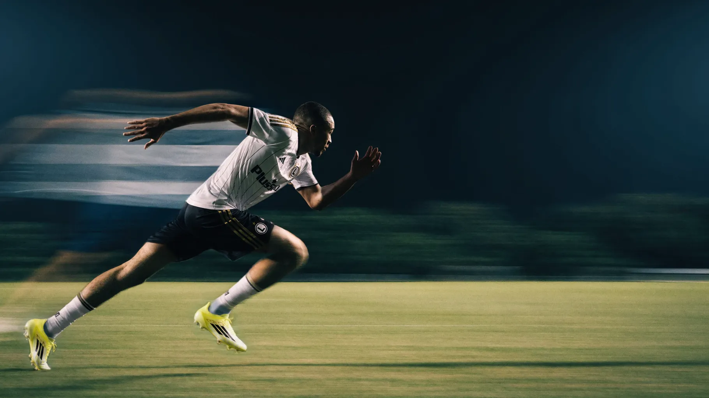
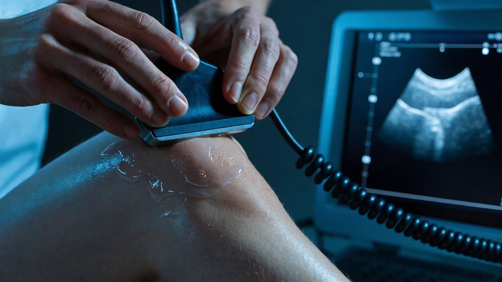
Ortopedia, medycyna sportowa i rehabilitacja - prowadzone przez sztab medyczny Legii Warszawa.
Umów się na wizytęZbadaj, wylecz i wróć do formy w jednym miejscu - z zespołem, który na co dzień prowadzi zawodowców.
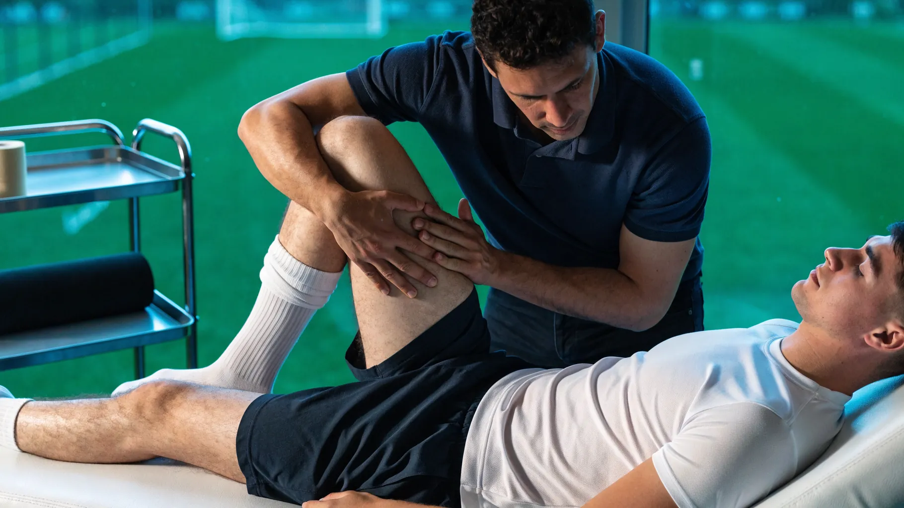
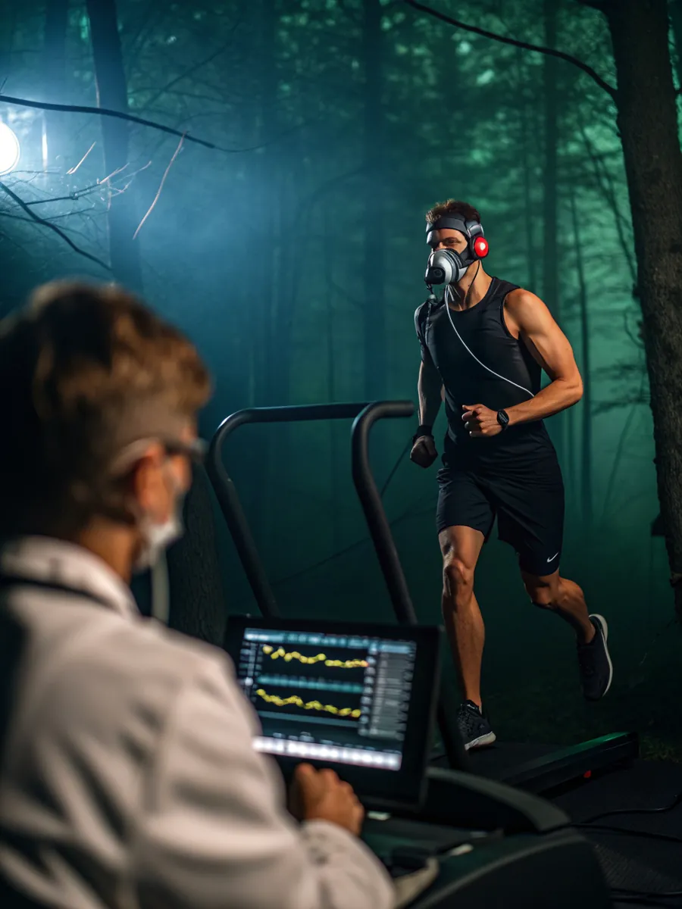
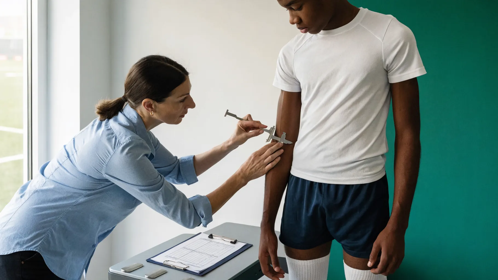
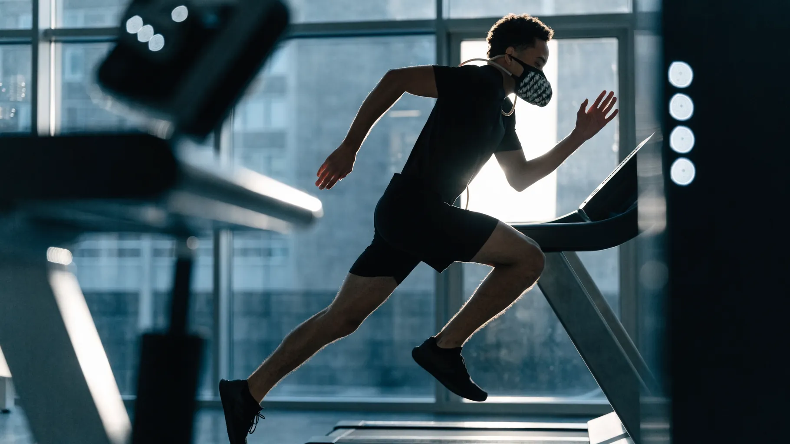
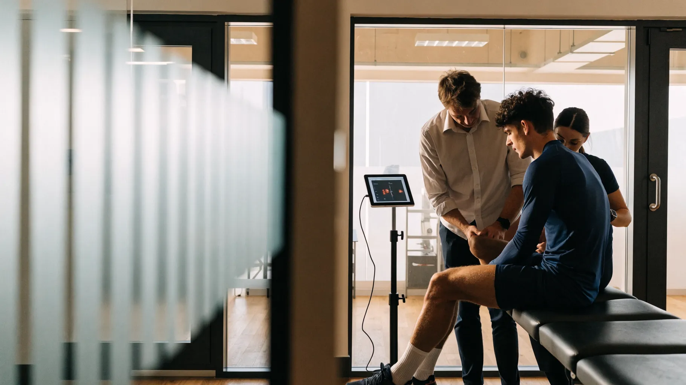
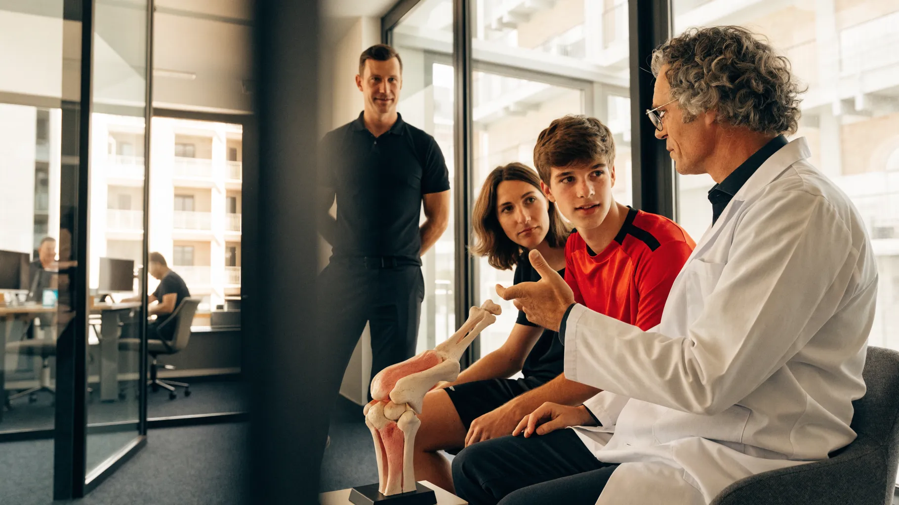
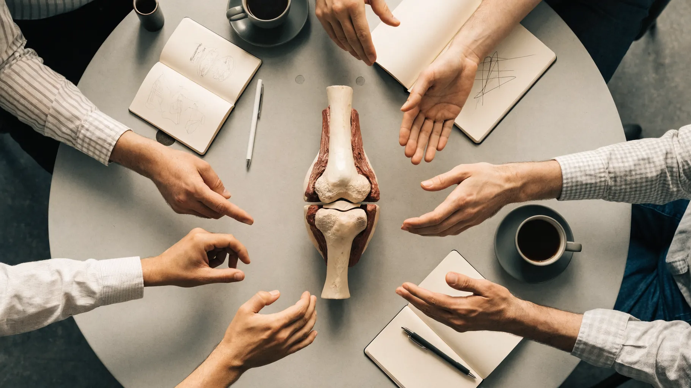
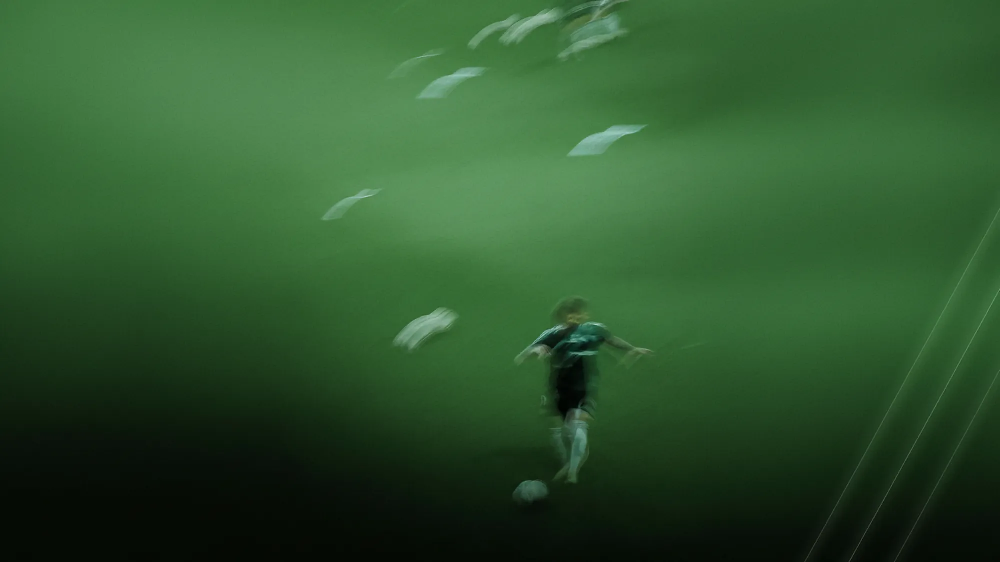
Koordynator
Jeden opiekun pacjenta, który planuje, umawia i prowadzi Twój proces.
Diagnoza
Wywiad, badanie, potrzebna diagnostyka obrazowa lub funkcjonalna, decyzja o ścieżce leczenia.
Realizacja
Leczenie i rehabilitacja u nas oraz ewentualne procedury u partnerów - z ciągłością informacji i celów.
Testy kontrolne
Obiektywne kryteria progresu i gotowości do powrotu.
Profilaktyka
Zalecenia treningowe, motoryka, edukacja, kontrole okresowe.
Czterech lekarzy i dwunastu fizjoterapeutów, którzy na co dzień prowadzą pierwszą drużynę, Legia Ladies i Akademię.
Autoryzowany punkt medyczny Legii Warszawa
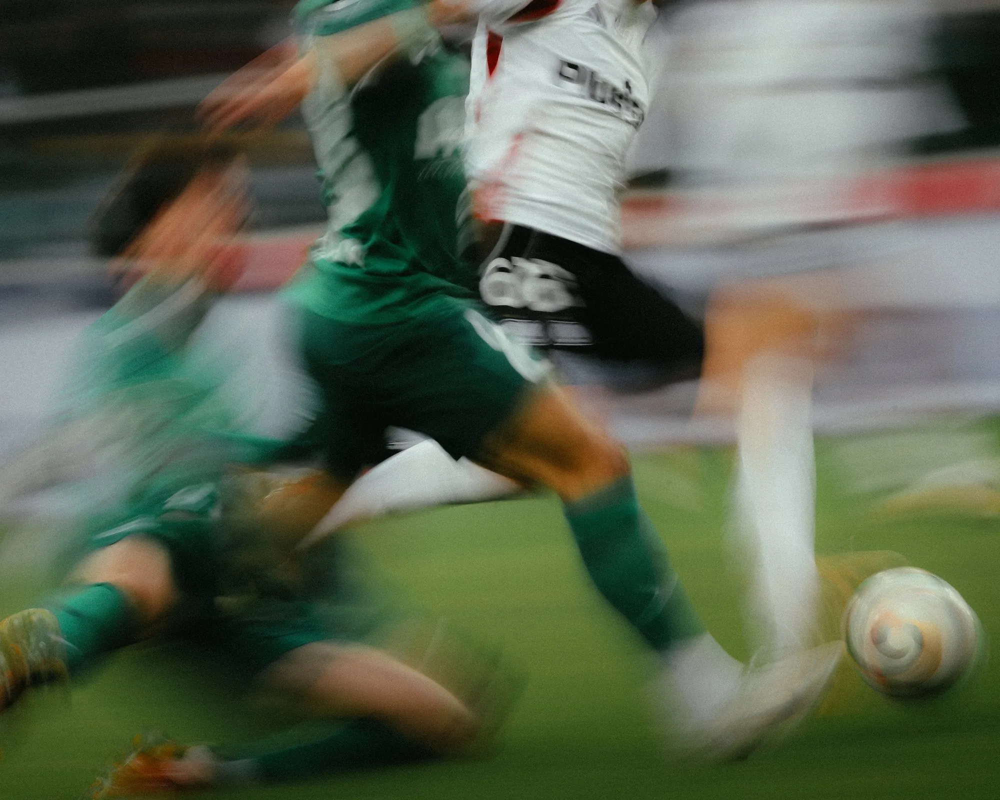
Piętnaście minut wystarczy, żeby ustalić, czego potrzebujesz. Bez skierowania i bez kolejki.